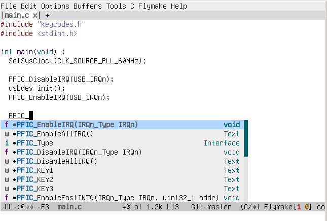

使用GNU EMACS开发单片机项目
编写Makefile
不支持使用通用构建系统编译的单片机SDK需要手动编写一个Makefile:
# 填写官方SDK存放位置XXX_SDK ?= /path/to/sdk# 一般填写官方SDK提供的Link脚本，如果没有则需要自己编写LINK_SCRIPT ?= /path/to/link.ld# 启动文件SRCS += $(XXX_SDK)/SRC/start.s# 需要编译的驱动源码文件SRCS += $(XXX_SDK)/SRC/xxx_timer.cSRCS += $(XXX_SDK)/SRC/xxx_uart.c# 搜索头文件的路径INCS += -I $(XXX_SDK)/INC/# 用户编写的代码文件SRCS += ./main.c# 编译参数CFLAGS += -Wall -Wextra -Os# 工具链CROSS_COMPILE ?= arch-vendor-elf-CC = $(CROSS_COMPILE)gccOD = $(CROSS_COMPILE)objdumpOC = $(CROSS_COMPILE)objcopy# 输出文件名FW_NAME ?= fwall: $(FW_NAME).elf $(FW_NAME).binclean:rm -fv *.elf *.bin# 中间产物ELF$(FW_NAME).elf:$(CC) $(CFLAGS) $(INCS) $(SRCS) -o $(FW_NAME).elf# 用来烧录到单片机的固件文件$(FW_NAME).bin:$(OC) -O binary $(FW_NAME).elf $(FW_NAME).bin
生成compile_commands.json
使用 compiledb 生成compile_commands.json
make cleancompiledb -- make all
配置clangd
由于clangd运行时会默认使用主机架构的编译器来处理源码文件
所以需要屏蔽一些架构相关的选项
在项目新建一个 .clangd 文件:
CompileFlags:Add: -Wno-unknown-warning-optionRemove: [-m*, -f*]
配置GNU EMACS
安装eglot（新版Emacs不需要手动安装，因为已经内置了）:
package-install RET eglot RET
安装company
package-install RET company RET
在emacs初始化文件中加入:
(add-hook 'c-mode-hook 'eglot-ensure) ;; 打开 C 文件时候自动开启eglot和clangd(add-hook 'c-mode-hook 'company-mode) ;; 打开 C 文件时候自动开启company，配合eglot进行补全
结束
到这里需要的配置已经完成了，使用Emacs打开你的的单片机项目.
敲出已有函数的前3个字符，就会弹出补全窗口了。

参考
我使用GNU EMACS作为编写工具的单片机项目: